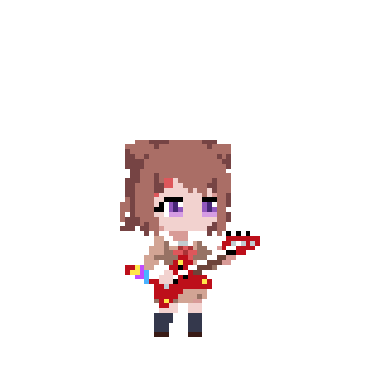
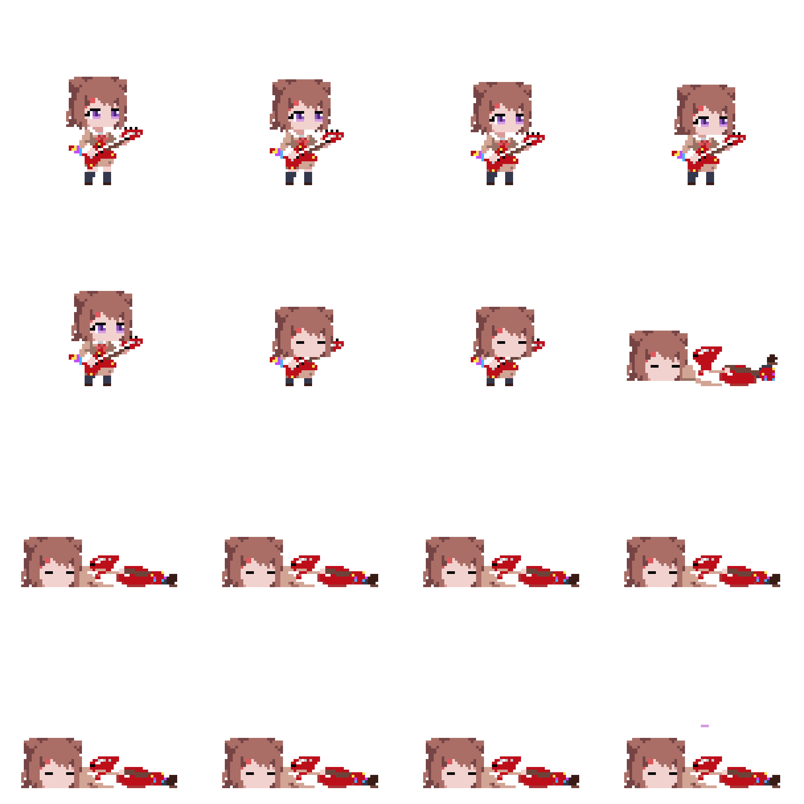

帧 01=官方帧原样 · 02-05 渐进蜷缩（头持续右下低） · 06-07 伏倒定格（头深低）×2 · 08 翻身弓身 · 09-10 仰面躺平 ×2 · 11-16 魂魄星星向左上飘
| 原生栅格 | 64 × 64（与 12.png 同格，块宽 10px） |
|---|---|
| 帧单元格 | 76 × 76（padding 6，与 ksm_hurt_pixel 一致） |
| 帧数 / 帧率 | 16 @ 12fps，loop=false |
| 枢轴 | Bottom Center（cell 内 38, 69） |
| alpha | 二值 0/255，透明背景 |
| Unity | Sprite Mode=Multiple，Grid By Cell Size=76×76，Filter=Point，Compression=None |